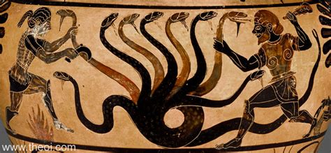

The Lernaean Hydra or Hydra of Lerna (Greek: Λερναῖα Ὕδρα, Lernaîa Hýdra), more often known simply as the Hydra, is a serpentine water monster in Greek and Roman mythology. Its lair was the lake of Lerna in the Argolid, which was also the site of the myth of the Danaïdes. Lerna was reputed to be an entrance to the Underworld, and archaeology has established it as a sacred site older than Mycenaean Argos. In the canonical Hydra myth, the monster is killed by Heracles (Hercules) as the second of his Twelve Labors.
According to Hesiod, the Hydra was the offspring of Typhon and Echidna. It had poisonous breath and blood so virulent that even its scent was deadly. The Hydra possessed many heads, the exact number of which varies according to the source. Later versions of the Hydra story add a regeneration feature to the monster: for every head chopped off, the Hydra would regrow two heads. Heracles required the assistance of his nephew Iolaus to cut off all of the monster's heads and burn the neck using a sword and fire.
The oldest extant Hydra narrative appears in Hesiod's Theogony, while the oldest images of the monster are found on a pair of bronze fibulae dating to c. 700 BC. In both these sources, the main motifs of the Hydra myth are already present: a multi-headed serpent that is slain by Heracles and Iolaus. While these fibulae portray a six-headed Hydra, its number of heads was first fixed in writing by Alcaeus (c. 600 BC), who gave it nine heads. Simonides, writing a century later, increased the number to fifty, while Euripides, Virgil, and others did not give an exact figure. Heraclitus the paradoxographer rationalized the myth by suggesting that the Hydra would have been a single-headed snake accompanied by its offspring. Like the initial number of heads, the monster's capacity to regenerate lost heads varies with time and author. The first mention of this ability of the Hydra occurs with Euripides, where the monster grew back a pair of heads for each one severed by Heracles. In the Euthydemus of Plato, Socrates likens Euthydemus and his brother Dionysidorus to a Hydra of a sophistical nature who grows two arguments for every one refuted. Palaephatus, Ovid, and Diodorus Siculus concur with Euripides, while Servius has the Hydra grow back three heads each time; the Suda does not give a number. Depictions of the monster dating to c. 500 BC show it with a double tail as well as multiple heads, suggesting the same regenerative ability at work, but no literary accounts have this feature. The Hydra had many parallels in ancient Near Eastern religions. In particular, Sumerian, Babylonian, and Assyrian mythology celebrated the deeds of the war and hunting god Ninurta, whom the Angim credited with slaying 11 monsters on an expedition to the mountains, including a seven-headed serpent (possibly identical with the Mushmahhu) and Bashmu, whose constellation (despite having a single Head) was later associated by the Greeks with the Hydra. The constellation is also sometimes associated in Babylonian contexts with Marduk's dragon, the Mushhushshu.